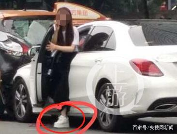

奔驰女司机闯红灯致13伤 被指事发时穿松糕鞋
5月21日8时50分许，广州市天河区林和中路林乐路口发生一起交通事故：一辆白色奔驰轿车突然闯红灯冲向斑马线，造成13人受伤，其中2人伤势较重。
▲白色奔驰车（左）突然冲向正在斑马线上行走的人群，造成群伤。视频截图
上班高峰期奔驰车突然起步闯斑马线
据视频显示，事发地位于广州天河中信广场附近一十字路口，当时是绿灯，不少行人正在穿行斑马线。涉事的粤牌白色奔驰小轿车突然启动，然后冲向斑马线，撞倒多名路人，现场一片慌乱。
知情人士告诉上游新闻记者，该路段经常发生交通事故，这次事故发生在人流高峰期，不少人赶着上班。而根据现场视频和图片显示，该肇事白色奔驰女司机穿了一双白色后跟很高的松糕鞋。
网上随即有信息报料，直指该涉事女子姓丁，从2010年起担任广州市纺织服装职业学校服装教学部副科长，工作热情主动；现兼任广州市工艺美术与服装教研会秘书长，广东省服装设计师协会理事，2011年评选为广东省十佳服装设计师。但这一信息尚未得到相关方面的证实。
广州市公安交警部门21日上午发布官方通报：据初步了解，事故造成13人受伤，其中2人伤势较重。接报后，广州交警会同天河区公安分局、卫健等部门，迅速派员赶赴现场处置。
目前受伤人员已送往医院救治。据称，肇事司机丁某，女，45岁，已经被警方控制。事故原因正在进一步调查中。
网上流传的肇事女司机脚穿松糕鞋。
女司机穿松糕鞋开车惹祸已有先例
此次事故中，肇事司机丁某被拍下脚穿一双松糕鞋，这也成为网友认为是肇事原因的猜测。
根据媒体报道，女司机穿松糕鞋驾驶车辆惹祸已非首次。
2015年11月2日下午1时30分许，浙江平阳县腾蛟镇平山村路段发生一起事故。周女士驾驶一辆香槟色别克轿车在平山村山上一处弯道处掉头时，车辆失控而冲下山坡。在处理过程中，民警发现周女士穿的是一双鞋底厚约6cm的“松糕鞋”，事发当时踩不到刹车与鞋子有一定的关系。
2017年夏天，湖南郴州民警在小塘省际卡口检查南下车辆时，发现一女子竟然脚“踩”一双10多厘米松糕鞋在驾车。民警看到都慌了，赶紧叫停，可是女司机却说:“松糕鞋和红裙子更配”。
媒体的实验发现，有2年驾驶经验的李女士穿松糕鞋驾驶自动挡轿车起步时，车身突然冲出停车位后又猛地停了下来。据李女士称，平时穿平跟鞋开车时能平缓起步，但是穿上鞋底较厚的松糕鞋后，脚下和踏板之间好像出现了隔离带，力度不好掌握，用力稍大就会导致车辆起步时车身向前猛冲。
实验结论认为，厚厚的鞋底致使刹车时脚部的感觉减弱，很容易踩轻或踩重，无法敏捷和灵活地操作。特别是在极短时间内加速和减速停车时，极易因控制不当酿成事故。